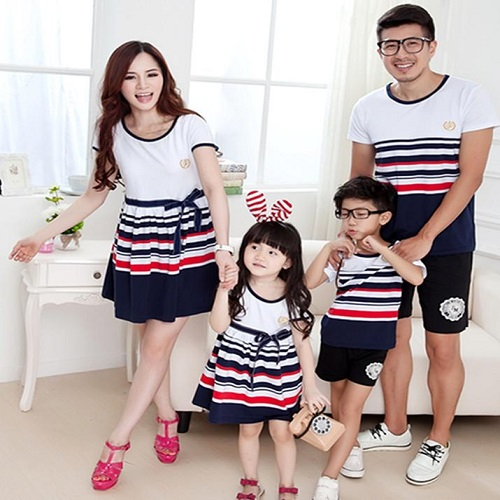

Kombin Nedir?:
Son dönemlerde Moda dünyasýnda popüler hale gelen kombin kelimesi Fransýzca kökenli
kombinasyon kelimesinden türetilmiþtir. Kombin kelime anlamý olarak farklý nesnelerin
ve parçalarýn birbirlerini tamamlayarak bir bütün oluþturmasý anlamýna gelmektedir.
Günümüzde insanlar modanýn, üretilmesinden ve tasarlanýlmasýndan daha çok nasýl sergilendiðine
bakmaktadýr. Çeþitlilik arttýkça gözler uyum aramaktadýr.
|